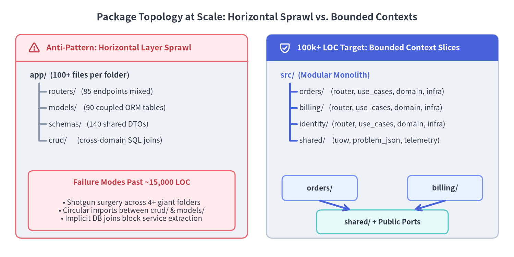
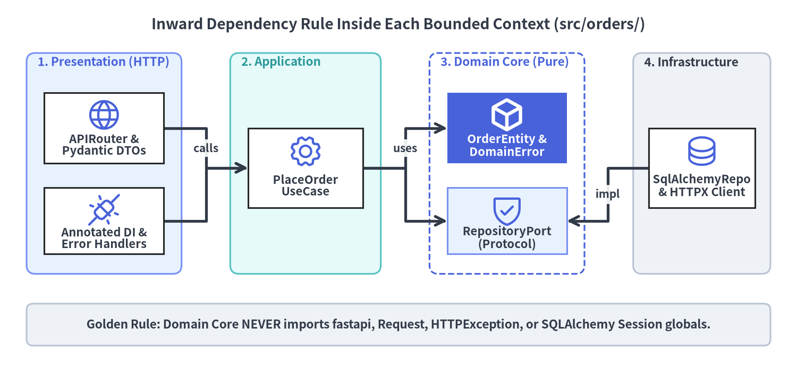

Bounded Contexts, Package Structure & Inward Layering
Scaling a Python backend past 100,000 lines of code (LOC) and dozens of engineers requires shifting from horizontal technical folders (routers/, models/, schemas/) to domain-aligned Bounded Contexts governed by strict inward dependency rules. FastAPI v0.162.2 supports this transition natively through composable APIRouter trees, Protocol-friendly dependency injection, and strict Pydantic v2 boundary contracts.

1. Why Horizontal Layer Folders Collapse Past 15,000 LOC
In a 2,000-LOC tutorial or prototype, grouping files by technical role—app/routers/, app/models/, app/schemas/, and app/crud/—feels tidy because every folder contains only three or four modules. Once an engineering organization scales past 15,000 to 100,000+ LOC, that same layout violates Common Closure Principle (CCP): code that changes together for a single business requirement is scattered across the entire repository.
Software Engineering Principles: Cohesion & Bounded Contexts
Large-scale maintainability rests on three foundational software engineering laws:
- Vertical Cohesion over Technical Categorization: Adding a single capability (such as partial order refunds) should modify files inside
src/orders/and nowhere else, minimizing Git merge conflicts across parallel squads. - Explicit Context Boundaries (DDD Bounded Contexts): An
Accountinidentity/(credentials, MFA, OAuth scopes) is fundamentally different from anAccountinbilling/(tax ID, ledger balance, invoice terms). Separating packages prevents a bloated, 80-column "GodUserTable" shared by every team. - Zero Cross-Context ORM Joins: Bounded contexts communicate exclusively through explicit application ports or domain events—never by importing another context's SQLAlchemy table into a
JOINquery. Preserving data autonomy lets you extract a high-load slice (likebilling/) into a standalone microservice later without rewriting business logic.
Applying FastAPI: Hierarchical APIRouter Composition
FastAPI's APIRouter is a lightweight route-registration tree, not a rigid controller base class. Each bounded context owns its internal package hierarchy and exports only a thin router object to the top-level composition root (src/main.py):
src/
├── main.py # ASGI composition root (lifespan, exception handlers, v1_router)
├── shared/ # Cross-cutting infrastructure (telemetry, RFC 9457 errors, UoW base)
├── identity/ # Bounded Context: Authentication & Tenant RBAC
│ ├── domain/ # Pure entities, value objects, DomainError subclasses
│ ├── application/ # UseCases & Protocol ports
│ ├── infrastructure/ # SQLAlchemy / OIDC adapters
│ └── presentation/ # FastAPI APIRouter,Annotated DI wiring, Pydantic DTOs
├── orders/ # Bounded Context: Order Lifecycle & Inventory Reservation
│ ├── domain/
│ ├── application/
│ ├── infrastructure/
│ └── presentation/
└── billing/ # Bounded Context: Invoicing & Payment Capture
├── domain/
├── application/
├── infrastructure/
└── presentation/
2. The Inward Dependency Rule (Clean & Hexagonal Architecture)
Organizing folders by domain is only half of the battle. Inside each bounded context (src/orders/), dependencies must point strictly inward toward business rules—never outward toward HTTP transport details or database drivers.

Why Domain Must Never Import fastapi or HTTPException
A classic trap in growing FastAPI codebases is raising HTTPException(status_code=409, detail=...) or accepting fastapi.Request deep inside domain services and repositories. That coupling creates three systemic liabilities at 100k+ LOC:
- Broken Reusability Across Transports: The moment you invoke the same order-placement logic from a CLI admin command, a Kafka/PubSub consumer, or a background worker, HTTP status codes (
409) andRequestheaders make no sense. - Untestable Domain Rules Without HTTP Scaffolding: Engineers are forced to construct fake Starlette
Requestobjects or parse JSON error responses just to unit-test pricing arithmetic. - ORM Session Leakage: Passing raw SQLAlchemy
AsyncSessioninstances into domain entities tempts engineers to trigger lazy-loaded queries mid-calculation, blurring transaction boundaries.
Pure Domain Ports (Protocol) & UseCases in Practice
In modern Python (3.10+), you do not need heavyweight abstract base class hierarchies or third-party IoC containers to invert dependencies. Define domain entities with @dataclass(frozen=True, slots=True) and declare infrastructure seams with typing.Protocol:
# src/orders/domain/entities.py — Zero FastAPI, Pydantic, or ORM imports!
from dataclasses import dataclass
from typing import Protocol
class DomainError(Exception):
"""Transport-agnostic base class for business rule violations."""
class InsufficientInventoryError(DomainError):
def __init__(self, sku: str, requested: int, available: int) -> None:
self.sku = sku
self.requested = requested
self.available = available
super().__init__(
f"SKU '{sku}' requested {requested} units, but only {available} available."
)
@dataclass(frozen=True, slots=True)
class OrderLine:
sku: str
quantity: int
unit_price_cents: int
@dataclass(frozen=True, slots=True)
class OrderEntity:
order_id: str
tenant_id: str
customer_id: str
lines: tuple[OrderLine, ...]
status: str = "CONFIRMED"
@property
def total_cents(self) -> int:
return sum(line.quantity * line.unit_price_cents for line in self.lines)
class OrderRepositoryPort(Protocol):
async def save(self, order: OrderEntity) -> OrderEntity: ...
async def get_by_id(self, order_id: str) -> OrderEntity | None: ...
# src/orders/application/use_cases.py — Pure orchestration over Protocol ports
class PlaceOrderUseCase:
def __init__(self, repo: OrderRepositoryPort, stock_by_sku: dict[str, int]) -> None:
self._repo = repo
self._stock = stock_by_sku
async def execute(
self,
*,
order_id: str,
tenant_id: str,
customer_id: str,
lines: list[OrderLine],
) -> OrderEntity:
for item in lines:
available = self._stock.get(item.sku, 0)
if item.quantity > available:
raise InsufficientInventoryError(item.sku, item.quantity, available)
entity = OrderEntity(
order_id=order_id,
tenant_id=tenant_id,
customer_id=customer_id,
lines=tuple(lines),
)
return await self._repo.save(entity)
3. DTO & Persistence Separation: Preventing Mass-Assignment & Leakage
In rapid prototypes, teams sometimes reuse a single model class (for example, one shared model representing the JSON request body, domain state, database table, and JSON response). In an enterprise system, collapsing those four boundaries creates severe security and schema-evolution hazards.

Applying FastAPI: Strict Inbound extra="forbid" & Outbound response_model
Pair strict inbound Pydantic DTOs with response_model=OrderReadDTO on every APIRouter operation so internal persistence fields (internal_fraud_score, shard_routing_key, password hashes) are structurally stripped before serialization (see Response Serialization & OpenAPI 3.1 for Rust-backed TypeAdapter serialization internals):
# src/orders/presentation/router.py — Strict DTO contracts + hierarchical APIRouter
from dataclasses import dataclass
from typing import Annotated
from fastapi import APIRouter, Depends, FastAPI, status
from pydantic import BaseModel, ConfigDict, Field
class OrderLineInputDTO(BaseModel):
model_config = ConfigDict(extra="forbid", str_strip_whitespace=True)
sku: str = Field(min_length=3, max_length=32, pattern=r"^[A-Z0-9_-]+$")
quantity: int = Field(gt=0, le=1000)
unit_price_cents: int = Field(gt=0)
class OrderCreateDTO(BaseModel):
# Rejects undeclared fields (e.g. status="PAID") with 422 Unprocessable Content
model_config = ConfigDict(extra="forbid", str_strip_whitespace=True)
customer_id: str = Field(min_length=3, max_length=64)
lines: list[OrderLineInputDTO] = Field(min_length=1, max_length=50)
@dataclass
class OrderRecord:
"""Persistence row containing sensitive internal metadata."""
order_id: str
tenant_id: str
customer_id: str
total_cents: int
status: str
internal_fraud_score: float = 0.02
shard_routing_key: str = "shard-ap-northeast-1a"
class OrderReadDTO(BaseModel):
"""Public outbound contract; omits internal_fraud_score & shard_routing_key."""
model_config = ConfigDict(from_attributes=True)
order_id: str
customer_id: str
total_cents: int
status: str
orders_router = APIRouter(prefix="/orders", tags=["orders"])
@orders_router.post("", response_model=OrderReadDTO, status_code=status.HTTP_201_CREATED)
async def create_order(
payload: OrderCreateDTO,
use_case: Annotated[PlaceOrderUseCase, Depends(get_place_order_use_case)],
) -> OrderRecord:
entity = await use_case.execute(
order_id="ord_2026_001",
tenant_id="tnt_enterprise",
customer_id=payload.customer_id,
lines=[
OrderLine(
sku=item.sku,
quantity=item.quantity,
unit_price_cents=item.unit_price_cents,
)
for item in payload.lines
],
)
return persist_and_load_record(entity)
# src/main.py — Top-level versioned router composition
v1_router = APIRouter(prefix="/api/v1")
v1_router.include_router(orders_router)
app = FastAPI(title="Enterprise Commerce API")
app.include_router(v1_router)
4. Enforcing Architectural Boundaries Mechanically in CI
In a 100k+ LOC repository with 30+ contributors, architectural rules documented only in Markdown wikis inevitably erode under deadline pressure. Treat package boundaries and type contracts as automated CI fitness functions.
Why FastAPI Route & DTO Modules Should Omit from __future__ import annotations
Unlike static-only libraries where annotations are erased at runtime, FastAPI v0.162.2 and Pydantic v2 introspect function signatures and Annotated[...] metadata at import/startup time (via typing_inspection and get_typed_signature) to build OpenAPI 3.1 schemas, parameter validators, and dependency DAGs.
[!IMPORTANT] Enterprise Rule for FastAPI Annotations: Python
3.10+natively supportsX | Yunion syntax andlist[str]/dict[str, Any]generics at runtime (and Python3.14implements PEP 649 deferred evaluation natively). Omitfrom __future__ import annotationsin FastAPIrouter.py,dependencies.py, and Pydanticschemas.pymodules. Turning annotations into raw strings breaks runtime resolution whenever a parameter type is defined in a local scope or hidden behindif TYPE_CHECKING:.
Automated Static Governance (mypy / ty, ruff & import-linter)
Combine strict static type checking (mypy --strict or Astral ty, backed by a py.typed PEP 561 marker), FastAPI-aware ruff rules (FAST), and import-linter contracts in pyproject.toml so illegal cross-context or outward domain imports fail CI immediately:
# pyproject.toml — Mechanical architectural fitness functions for 100k+ LOC
[tool.mypy]
python_version = "3.12"
strict = true
plugins = ["pydantic.mypy"]
disallow_any_generics = true
[tool.ruff.lint]
select = [
"E", "F", "I", "B", "UP",
"FAST", # FastAPI-specific lint rules (redundant response_model/Depends checks)
"TID251", # Banned module-level imports
]
[tool.ruff.lint.per-file-ignores]
# Domain & Application layers must remain 100% framework-free
"src/*/domain/**" = []
[[tool.importlinter.contracts]]
name = "Domain and Application never import FastAPI or SQLAlchemy"
type = "forbidden"
source_modules = ["src.orders.domain", "src.orders.application"]
forbidden_modules = ["fastapi", "starlette", "sqlalchemy"]
[[tool.importlinter.contracts]]
name = "Bounded Contexts remain independent of peer infrastructure"
type = "independence"
modules = [
"src.orders.infrastructure",
"src.billing.infrastructure",
"src.identity.infrastructure",
]
With bounded contexts and inward dependency layers locked in place, proceed to Enterprise DI, Lifespan & Testing to see how FastAPI wires connection pools, scoped Unit-of-Work sessions, RFC 9457 domain exception handlers, and a sub-second test pyramid across these layers.